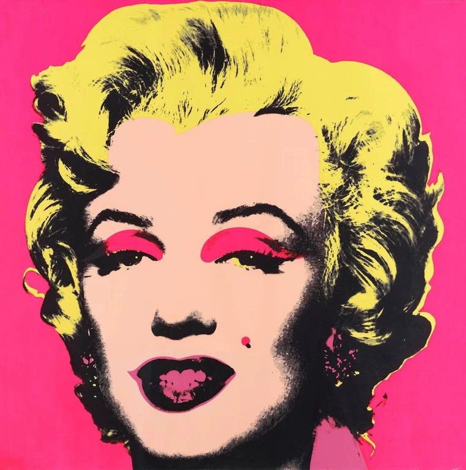
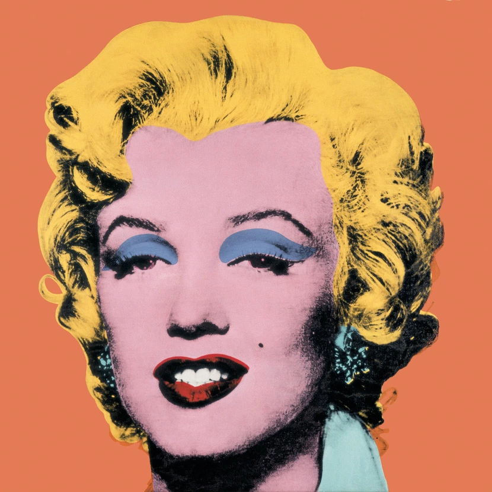
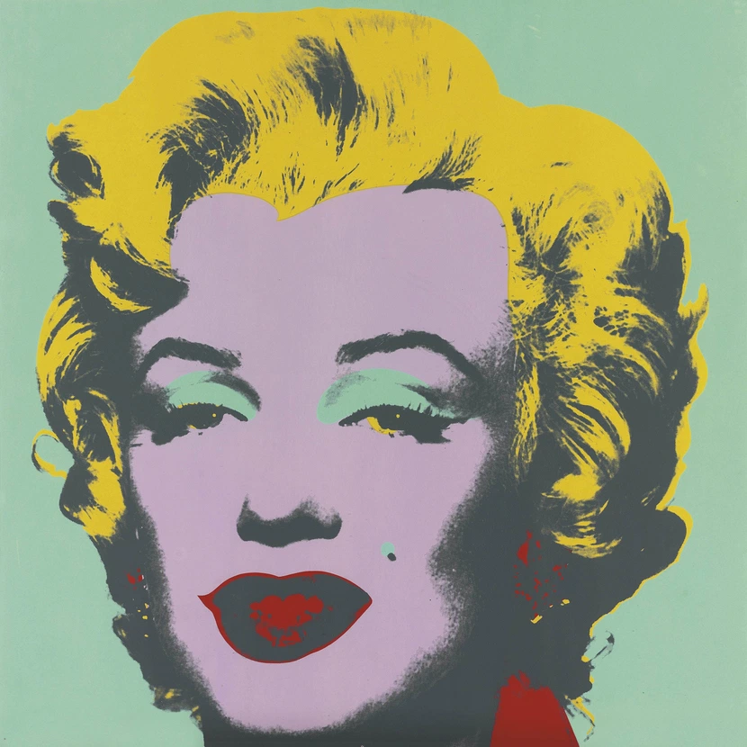
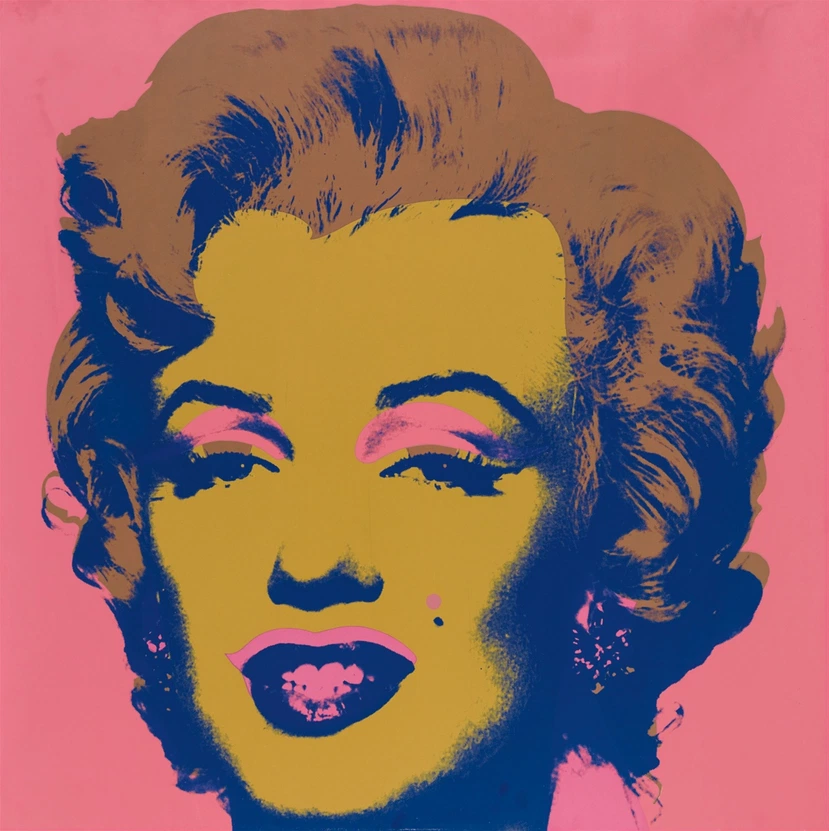
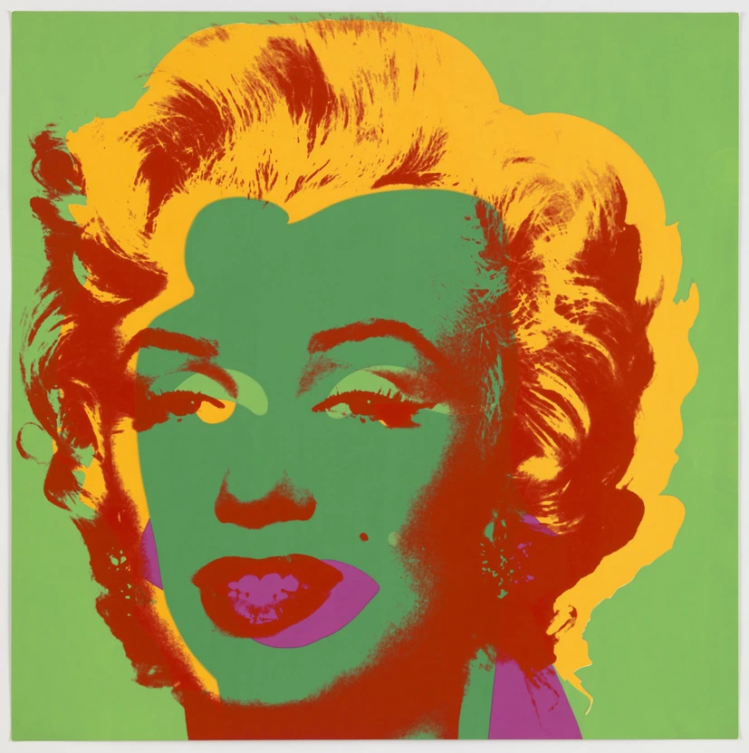

Andy Warhol
Scroll down and enjoy
Whatever you feel, think, or say about Andy Warhol, it’s probably true, and he would likely agree with you. There is already so much written about him, and yet the story seems to have no end.
Hollywood Blonde
-





In August of 1962, the film star Marilyn Monroe died of a drug overdose. By the end of that year, Warhol had made 23 prints of her. Warhol experimented with different color schemes, painting Monroe against backgrounds of gold, orange, or purple, and giving her blue, green, or purple eyeshadow.
Warhol found in Monroe a fusion of two of his consistent themes: death and the cult of celebrity. By repeating the image, he evokes her ubiquitous presence in the media. The contrast of vivid colour with black and white, and the effect of fading in the right panel are suggestive of the star’s mortality.